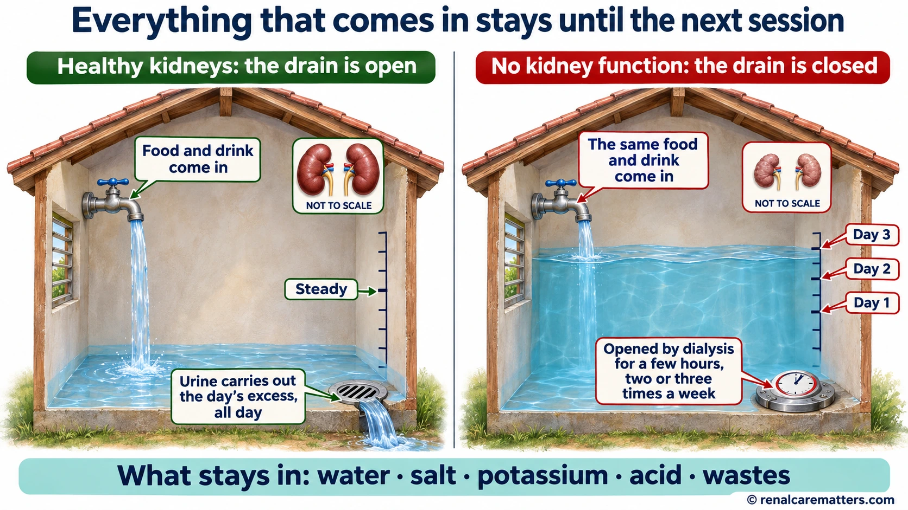
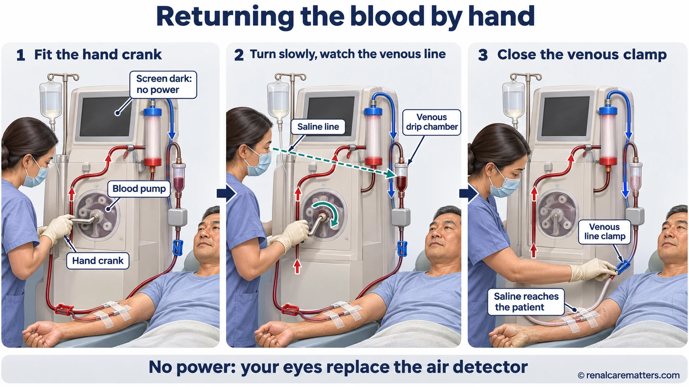
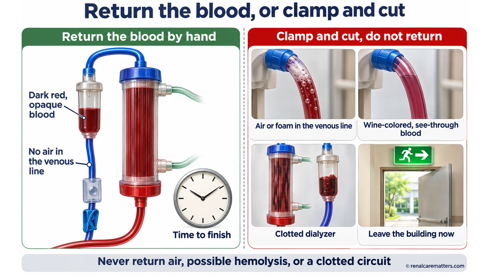
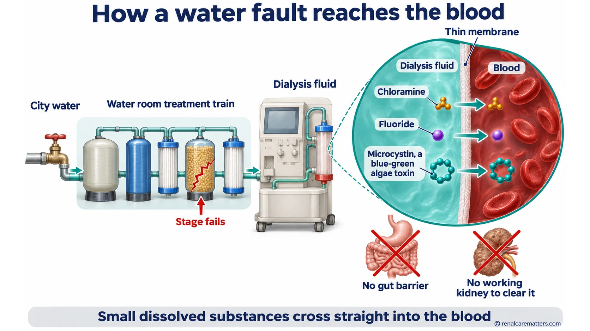
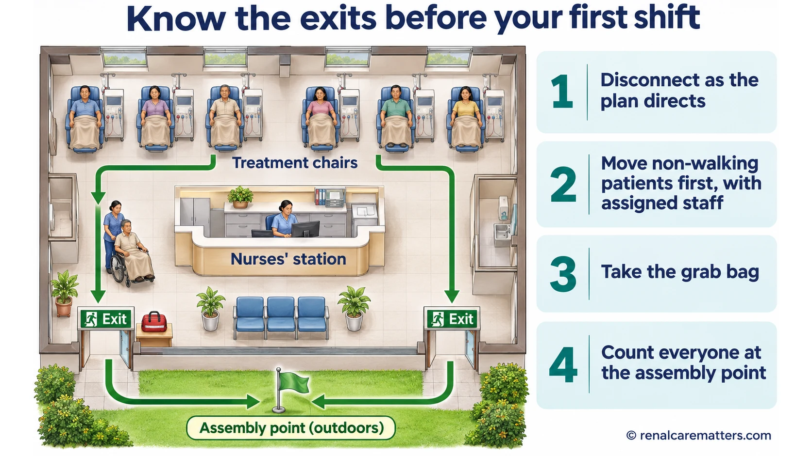
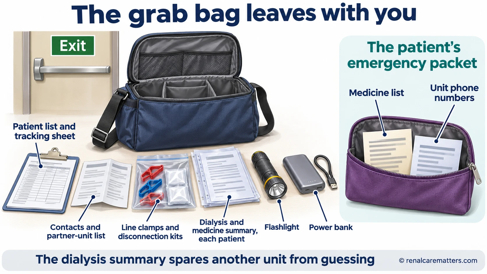

The first ten minutes of a power, water, or building emergency, and how patients stay dialyzed when the unit cannot open.
PublishedNailathalaGipatikPepalwal:ReferencesMga SanggunianMga TinubdanReng Reperensya:27Audience: Physicians who cover hemodialysis shifts · attending nephrologists, medical directors, and head nurses who orient themRead timeOras ng pagbasaOras sa pagbasaOras ning pamamasa:
This module is study material for physicians on duty in hemodialysis units. It explains the reasoning behind common decisions; it is not a protocol. At the chairside, follow your unit’s protocol and ask the attending nephrologist for guidance. Doses and cut-off values are set by your unit. Every case is fictional.
Learning objectives
After this module you should be able to
Explain why a dialysis patient tolerates a missed session poorly and why sessions are moved earlier before a storm, with the strength of the evidence.
Lead the first ten minutes of a power failure: confirm that every patient is safe, oversee emergency take-off with manual blood return when it is safe, and call per protocol.
Recognize a possible water or dialysis fluid contamination event, have the affected treatments stopped, keep the circuits, and escalate at once.
Respond to an earthquake, fire, flood, or evacuation order using the unit’s plan: emergency disconnection, the grab bag, the routes, and patient tracking.
Apply the unit’s priority list when capacity is cut, and give patients the emergency diet and medicine advice the unit has approved.
Describe how a unit keeps its patients dialyzed when it cannot open: partner units, a patient registry, a communication tree, and an after-event review.
Pre-testBefore you read, answer the 8 self-assessment questions and note your score. After the module, select New set of questions and compare. The difference is what you learned; the questions you still miss are what to reread.
Start here
The big picture, in plain words
In plain wordsPicture a jeepney route that needs fuel, a road, a driver, and a working engine all at once. Lose one and the trip stops. A hemodialysis patient depends on four things in the same way: electricity, treated water, transport, and trained staff. A typhoon can take away all four in one night.
The picture has a limit. A stalled jeepney waits safely at the roadside. A patient’s body does not wait. Without dialysis, water, potassium, and acid keep building up. And when the power fails mid-session, part of the patient’s blood is outside the body, in tubing that has stopped moving.
Figure 1 · Key terms for this module
Emergency take-offEnding all treatments quickly because the unit can no longer run them.
Manual blood returnReturning the circuit’s blood by turning the blood pump by hand.
Clamp and cutDisconnecting without returning the blood.
Standby generatorA fuel generator that takes over when the main power fails.
Water eventIllness caused by a fault in the water or dialysis fluid.
Early dialysisA session moved ahead of schedule before an expected disruption.
Priority listThe unit’s written order for who dialyzes first when sessions are short.
Grab bagA packed bag by the exit with the patient list, contacts, kits, and dialysis summaries.
Most power cuts end when the generator starts, and the shift goes on. A few become real emergencies: the generator fails, the water room floods, the building shakes, or several patients fall ill at once. Your work is to keep every patient safe in the first ten minutes, follow the unit’s plan without improvising, and call early.
Opening case · fictional
Case: Signal No. 4, and tomorrow is a full day
It is a Wednesday in September, 4:10 p.m., the second shift at a 15-station free-standing unit in Marikina. The Philippine Atmospheric, Geophysical and Astronomical Services Administration (PAGASA) has raised Tropical Cyclone Wind Signal No. 4 for the area, with landfall expected overnight. Twelve patients are on the machines.
The nurse, Ms. Maricel Dizon, calls you. The main power has failed, the generator has not started, and the machines are alarming on battery. Mr. Rodrigo Santos, 58, dialyzes through a right internal jugular catheter and is at hour three. His last pressure was 104/62 mm Hg. Mrs. Lourdes Reyes, 71, has a left arm fistula. She missed Monday’s session because of flooding, and her potassium before dialysis today was 6.8 mmol/L. She is 40 minutes into treatment. These values are illustrative.
The technician, Mr. Jun Aquino, is checking the generator. The charge nurse has assigned one nurse to each row and opened the emergency take-off kits. Tomorrow’s schedule has 30 patients, and the water room is in the basement.
Before reading on, decide:
What do you check and decide in the next ten minutes, and in what order?
Which patients’ blood should be returned by hand, and when would you clamp and disconnect without returning it?
What do you ask the attending nephrologist about tomorrow’s 30 patients, and who should be dialyzed first if the unit can open only partly?
Keep your answers in mind. The lesson gives you what you need, and the case review near the end shows one sound response.
Lesson · part 1
Why a dialysis patient cannot wait out a storm
Module 2 explained the closed drain. A failed kidney no longer removes the water, salt, potassium, and acid that enter the body each day. Dialysis opens the drain for a few hours, then closes it until the next session.

Figure 2. With the drain closed, everything that comes in stays until the next session. A storm keeps the drain closed for longer.
Each skipped session adds two or three more days of intake to a body that cannot clear it. The danger does not rise in a straight line. Potassium can reach a level that disturbs the heart rhythm before the patient feels short of breath. A patient who looks well can still be in danger.
The long gap is already the riskiest part of the week. In a large cohort, death and cardiovascular admission were more frequent on the day after the long weekend gap than on other days.1 A disaster stretches a two-day gap into four or five.
What the disaster studies show
After Hurricane Katrina in 2005, investigators interviewed 386 patients from nine New Orleans units. Overall, 44% missed at least one session and almost 17% missed three or more. Missing three or more, compared with none, was associated with hospitalization: adjusted odds ratio (OR) 2.16, 95% confidence interval (CI) 1.05 to 4.43. Patients unaware of their unit’s emergency plan were more likely to miss three or more.2 Outside disasters, the Dialysis Outcomes and Practice Patterns Study (DOPPS) found that skipping one or more sessions a month was associated with higher mortality (relative risk 1.30).3 Both studies are observational. Patients who miss sessions differ in many ways from those who do not.
Before Hurricane Sandy in 2012, many units dialyzed patients ahead of schedule. A retrospective study of Medicare claims included 13,836 patients; 60% received early dialysis. After adjustment, early dialysis was associated with lower odds of an emergency department visit (OR 0.80), hospitalization (OR 0.79), and death within 30 days (OR 0.72, 95% CI 0.52 to 0.997).4 The data could not show who was offered early dialysis and declined, so healthier patients may have been the ones who came. The finding supports the practice; it does not prove that early dialysis prevents death.
What you do when a storm is coming
When PAGASA raises a wind signal for your area, ask the charge nurse and the attending nephrologist whether the unit’s plan moves sessions earlier, and help identify the patients most at risk. Any change to a schedule, session length, or fluid goal is the nephrologist’s decision. The site’s interdialytic weight gain calculator shows how a delayed session raises the fluid to be removed next time.
RememberA dialysis patient has no spare days. Every storm plan starts with one question: when is each patient’s next session, and can it come earlier?
Lesson · part 2
Power failure: the first ten minutes
Think of the dialysis machine as four devices in one box: a pump, a heater, a mixer, and a set of alarms. When the power fails, all four stop together. The blood in the lines does not know that.
What stops, and what follows
When the blood pump stops, the blood in the circuit (Module 5) stands still. Standing blood in contact with the tubing and dialyzer begins to clot, so the chance of returning it falls by the minute. The dialysis fluid stops and cools, and fluid removal stops.
The alarms matter most. The venous air detector and venous line clamp keep air out of the vein. Without power, or once a backup battery runs down, they may not work. Battery time varies by model; ask your technician, and do not assume a figure.
Philippine licensing rules require a standby generator appropriate to the facility’s size and a plan for emergencies.5 The Philippine Society of Nephrology (PSN) standard for hemodialysis clinics repeats both.6 A generator still takes time to start and can fail. A Signal No. 4 warning expects a near total loss of power and telecommunications.7
Manual blood return is a standard textbook procedure for power failure.8 No trial has compared responses; the order below is established practice, not tested evidence.
Figure 3 · Power failure: the first ten minutes
Patients firstWalk the floor. Check every patient’s airway, consciousness, and access before you look at a machine. Uncover each access and look for bleeding.
Ask for the power statusAsk the technician whether the generator has started, whether it is stable, and how long its fuel will last.
Decide with the charge nurseContinue on generator power only if the technician confirms it is stable. Wait only as long as your unit’s protocol allows. Otherwise begin emergency take-off.
One staff member per patientEach patient whose blood is being returned has one staff member at the chair, watching the venous line.
Watch the patientsRecheck pressures and ask about cramps, dizziness, and chest pain during the return. Respond per protocol.
Count and recordAccount for every patient: time off, method, and blood returned or not returned.
CallThe attending nephrologist and the Medical Director, using the SBAR (Situation, Background, Assessment, Recommendation) format from Module 1.
Worked example, illustrative. Generator runtime (hours) = usable fuel (liters) ÷ fuel use at the expected load (liters per hour). This is arithmetic; the fuel use comes from the generator’s data plate and the technician’s log. Usable diesel = 120 liters. Fuel use at the unit’s usual load = 8 liters per hour. Runtime = 120 ÷ 8 = 15 hours. What it tells you: roughly how long the fuel supports treatment. What it does not tell you: whether the generator will keep running. Fuel use rises with load and poor maintenance, and a refill truck may not arrive during a storm.
Ask for this number at the start of every storm shift.
Stop and callStop and call the attending nephrologist and the Medical Director when power cannot be restored within the time your unit’s protocol allows, when any patient is unstable, or when blood cannot be returned safely. Follow your unit’s protocol while you call.
Lesson · part 3
Emergency take-off: returning the blood by hand
Picture a shop owner closing in a hurry before a storm: the cash is still counted and the doors locked in the same order. Speed comes from a fixed order, not from skipping steps.
In a normal take-off, the machine pumps the blood back while the air detector watches the venous line. Without power, a nurse turns the blood pump with a hand crank, and the detector and clamp may not act.8 The operator’s eyes now do the detector’s job. On some models the battery still runs the blood pump and air detector for a short time; if your unit’s protocol uses that window for the return, it is one more reason not to wait.

Figure 4. Manual blood return without power. One nurse turns the blood pump by hand and watches the venous drip chamber and line until the clamp is closed, because the air detector may not work.
Air in the venous line can travel to the heart, lungs, or brain. Blood whose red cells have broken down (hemolysis) carries potassium and free hemoglobin that can harm the heart.9 Module 16 covers both, and its rule applies unchanged: do not return blood that may contain air or may be hemolyzed.
Return the blood, or clamp and cut
Returning the blood gives back the red cells and volume in the circuit. That is right when the session ends for a cause outside the patient and the circuit is sound. It is wrong when the blood or circuit may be the danger, or when there is no time. Clamp and cut uses a kit to close and separate the lines in seconds, for example after earthquake damage or during a fire. Whichever method is used, a central venous catheter’s own clamps are closed before its lines are separated, because an open catheter hub can draw air into a central vein.9 The unit decides in advance which method fits which situation, and how fistula needles are secured or removed.

Figure 5. Return the blood when the session ends for a cause outside the patient and the circuit is sound. Clamp without return when there is air, possible hemolysis, a clotted circuit, or no time to stay.
What you do during take-off
The nurses perform the return. You lead and watch the patients.
Assign one staff member to each patient being returned, and name who watches the venous line.
Examine the unstable patients first: low pressure, chest pain, or confusion.
Decide with the charge nurse which patients are clamped without return: a clotted circuit, visible air, or possible hemolysis.
Watch for low pressure, cramps, and dizziness as blood goes back. Respond per your unit’s protocol.
When every patient is off, confirm that each access has stopped bleeding.
Record each patient’s time off, method, volume returned or not returned and why, and condition.
Tell the attending nephrologist who was cut short and by how much; their next session may need to come sooner.
RememberWithout power, the operator’s eyes replace the air detector. One staff member stays with each patient whose blood is being returned, watching the venous line until the clamp is closed.
Lesson · part 4
When the water fails or turns toxic
The water room is the unit’s second kidney. Each session, the patient’s blood meets a very large volume of dialysis fluid, separated from it only by a thin membrane.
Illustrative arithmetic. Dialysis fluid per session = dialysis fluid flow (mL per minute) × session time (minutes). 500 mL per minute × 240 minutes = 120,000 mL = 120 liters. What it tells you: the scale of exposure. A person drinks a few liters a day; a dialysis patient meets about a hundred liters in four hours. What it does not tell you: this patient’s prescription, which sets the real flow and time.
A substance in drinking water must cross the gut, and healthy kidneys clear what gets through. In dialysis, small dissolved substances cross the membrane straight into the blood, and the kidney that would clear them has failed.

Figure 6. Why a fault in the water reaches the blood. Small dissolved substances in the dialysis fluid cross the membrane directly, without the gut or a working kidney in the way.
Module 6 described the treatment train. Here the point is what happens when a stage fails. Chloramine, a disinfectant in city water, is not removed by reverse osmosis; the carbon beds must remove it. When the carbon is exhausted, chloramine reaches the dialysis fluid and damages red cells, causing hemolysis and anemia.10,11
Event
What failed
What patients showed
What it teaches
Chloramine, one Brazilian unit, 2004
An exhausted activated carbon column
Hematocrit and hemoglobin fell across the unit, and recovered within a month after the column was changed, with no change in erythropoietin12
Anemia in many patients at once may be a water problem
Fluoride, one United States unit
A temporary deionization system released the fluoride it had held
12 of 15 patients in one room fell ill with severe itching and nonspecific symptoms; 3 died of ventricular fibrillation. None of 17 in the next room fell ill13
Illness confined to one room or loop points to that water
Microcystins, Caruaru, Brazil, 1996
Untreated reservoir water carrying toxins from blue-green algae (cyanobacteria)
116 of 130 patients had visual disturbance, nausea, and vomiting; 101 met the definition of acute liver failure, and 50 died14
Source water and its treatment matter as much as the machines
Outbreak reports cannot show how often such events happen, only how they first appear.
Recognize a water event
Think of the water when more than one patient in a room or shift has similar symptoms: chest or back pain with wine-colored blood in the venous line, anemia across the unit, itching, nausea, headache, visual disturbance, or a cluster of fevers or chills. A water alarm, a failed test, or a lost supply is a water event by definition.
What the rules require
Department of Health (DOH) Administrative Order 2013-0003 requires microbiological tests monthly at three points (raw water, product water, and the point of use) and chemical tests at the point of use before opening and every six months. When a test fails, the facility temporarily stops operations until a repeat test complies, disinfects the product water loop, and notifies its patients.15 The current international standard for dialysis water is ISO 23500-3:2024, from the International Organization for Standardization (ISO).16
The regulatory limit for the bacterial count in dialysis water is the one in the DOH order: less than 200 colony-forming units (CFU) per milliliter.15 Accredited water testing laboratories report against this DOH value, and it is the limit that licensing inspectors apply. The PSN standard gives a stricter target of less than 100 CFU/mL.6 Some units adopt the stricter target in their water policy, approved by the Medical Director. A result that meets it also meets the DOH limit; a result above the DOH limit is a failed test.
A dry tank, a cut supply, or a flooded water room stops product water, and treatments stop. The site’s water system capacity calculator compares peak demand with what the system makes. Whether water is fit for dialysis is decided by the technician and the Medical Director, not the physician on duty.
Worked example, illustrative. At 9:20 a.m., two patients in Room B report chest tightness and back pain. One patient’s plasma looks pink. Proportion affected = patients with symptoms ÷ patients in the room = 2 ÷ 6 = 33%, on one water loop. What it tells you: the arithmetic is trivial; the pattern is the alarm. What it does not tell you: the cause. A kinked line or one faulty machine can also cause hemolysis.
Figure 7 · Two patients, same symptoms: the water event pathway
Stop the affected treatmentsAsk the nurses to stop the blood pump and clamp the lines per protocol.
Do not return the bloodIf hemolysis is possible, the blood stays in the circuit (Module 16).
Keep the evidenceKeep the circuits, dialyzers, and dialysis fluid samples. Ask the technician to hold the water room as it is.
Examine everyone on the loopNot only the two who complained. Ask about pain, itching, nausea, and vision.
Send the sickPatients with chest pain, signs of hemolysis, or an abnormal rhythm go to the emergency room per protocol, with an electrocardiogram (ECG).
Call at onceThe attending nephrologist and the Medical Director. The unit then follows the steps of the DOH water order.
Stop and callStop and call the attending nephrologist and the Medical Director at once when two or more patients become ill with similar symptoms in the same shift, when a water alarm or a failed water result is reported, or when the water supply stops. Follow your unit’s protocol while you call.
RememberOne sick patient is a patient problem. Two sick patients with the same symptoms in the same shift is a water problem until proven otherwise.
Lesson · part 5
Earthquake, fire, flood, and evacuation
A ship’s crew drills the lifeboats on calm days, because in a real sinking people do what they have practiced.
Typhoon and flood
Typhoons give warning. PAGASA uses five wind signal levels. At Signal No. 4, winds of 118 to 184 km/h are expected within 12 hours, with a near total loss of power and telecommunications and a likely fall in potable water. At Signal No. 5, electricity, potable water, and telecommunications may be unavailable for prolonged periods.7
Figure 8. PAGASA’s five wind signals. At Signal No. 4 and No. 5, loss of power, telecommunications, and potable water is expected, which are the three things a dialysis unit runs on.
A flood that reaches a basement water room or generator ends treatment even when the floor above is dry.
Earthquake
Shaking can pull needles out and topple machines. When it stops, check every patient’s access for bleeding and every patient’s condition first, then the building. Crush injury with acute kidney injury (AKI) belongs to the attending nephrologist and the hospital, though your unit may be asked for emergency sessions. After the 2023 Kahramanmaraş earthquake in Türkiye, high potassium (hyperkalemia) was the most frequent first reason for dialysis in crush-related AKI at one center, in 61 of 82 patients (74.4%), and outages of power and water hindered treatment (a single-center retrospective study).17 The International Society of Nephrology (ISN) recommendations for crush victims rest on retrospective analyses, case reports, and expert opinion, and carry no grades by design.18
Fire and evacuation
Follow the unit’s evacuation plan and routes. Patients who cannot walk are moved first, by staff assigned in advance. Module 15 covers resuscitation; here the task is to move people.

Figure 9. Know the exits and the assembly point before your first shift. Patients who cannot walk are moved first by staff assigned in advance, and everyone is counted at the assembly point.
The grab bag leaves with the staff; without each patient’s dialysis summary, a receiving unit must guess the prescription.

Figure 10. The unit grab bag and the patient’s emergency packet. The dialysis summary lets another unit treat a displaced patient without guessing the prescription.
Stress raises blood pressure. In 205 hemodialysis patients in Fukushima City, mean pressure before dialysis rose from 148.6/77.5 mm Hg at baseline to 153.1/80.1 mm Hg one week after the 2011 Great East Japan Earthquake.19 This retrospective, single-region study is a reason to recheck pressures after a disaster, not a treatment target.
What you do
Before your first shift, learn the exits, the assembly point, the take-off kits, the flashlights, and the patient tracking sheet.
During the event, report to the incident lead named in the unit’s plan.
Account for every patient and staff member at the assembly point, and record where each patient went.
RememberIn an evacuation, count before you treat. Every patient and every staff member is accounted for, and the grab bag leaves the building with you.
Lesson · part 6
When capacity is cut: who dialyzes first, and what to eat until then
A lifeboat with fewer seats than passengers needs rules for who boards first, written on calm days. The patients who become dangerously ill first are those whose closed drain fills fastest or who have the least room.
Who dialyzes first: set by the unit and the attending nephrologist
Factor a priority list usually weighs
Why it matters
What you can find out
Days since the last session
Water, potassium, and acid build up with time
Date and time of the last completed session
Residual urine output
Urine still removes some water and potassium
The patient or the record
Potassium
A high level can disturb the rhythm before symptoms
The last result and its date
Breathlessness or swelling
Fluid already in the lungs
A phone call or an examination
Access
A failing catheter or clotted fistula delays treatment further
The last session’s notes
A review by Sever and colleagues names fair distribution of limited resources and limiting harm as the core ethical concerns.20 Shortened or less frequent sessions are consensus practice; no trial has tested them or any priority order.
Worked example, illustrative. Today is Wednesday. Three patients cannot be reached for tomorrow. Patient A: last session Saturday, no urine, last potassium 6.2 mmol/L. Days since the last session = 4. Patient B: last session Monday, weight gain 2.1 kg, passes urine daily. Days = 2. Patient C: last session Monday, catheter with poor flow. Days = 2. A has the longest gap and no residual function, so A is offered the earliest slot; C’s catheter is reported to the nephrologist. The real order is set by the unit’s priority list and the attending nephrologist. What it tells you: a starting point. What it does not tell you: who is sickest. Sorting is not triage.
The site’s dialysis continuity planner compares sessions due with staffed chairs, water, power, kits, and partner slots. It shows the gap; it does not decide who goes first.
What to eat until the next session
The Kidney Community Emergency Response (KCER) Coalition publishes a three-day emergency kidney diet. It favors low-sodium canned fish, poultry, and vegetables, plain crackers, and bottled water, and lists potatoes and tomatoes as foods not to eat.21 The Centers for Disease Control and Prevention (CDC) advises patients to keep numbers for their own unit and another nearby, at least a three-day supply of each medicine, and to follow the emergency diet.22
Emergency diet card: principles from the KCER sheet; limits set by the unit dietitian
Principle
For this patient (unit to complete)
Less salt: low-sodium or no-salt-added canned food
Sodium advice: ______
Avoid high-potassium foods such as potatoes and tomatoes
Potassium advice: ______
Drink less: fluid builds up without dialysis
Daily fluid limit: ______
A three-day supply of each medicine and a written list
Medicines to continue: ______
Numbers for the unit and a partner unit
Partner unit: ______
The KCER sheet gives no daily limits; those come from the unit dietitian and the nephrologist. Module 23 adapts the choices to Filipino meals. In a survey of 357 patients after Hurricane Sandy, 26.3% missed dialysis and only 44.3% carried a detailed medication list. Dialysis-specific preparedness was associated with fewer missed sessions (incidence rate ratio 0.91, 95% CI 0.87 to 0.98).23 Prepared patients may differ in other ways.
Apply the unit’s priority list with the attending nephrologist. Never improvise a session length or fluid goal, and write down why each patient was placed where.
Stop and callStop and call the attending nephrologist before any change from the prescribed schedule, session length, or fluid goal, and for any patient who has missed a session and has breathlessness, weakness, palpitations, or a high potassium result. Follow your unit’s protocol while you call.
Lesson · part 7
Keeping patients dialyzed when the unit cannot open, and the call card
Think of a relay team: if one runner falls, the baton must already be within reach of the next. When a unit cannot open, its patients must already be known to another unit.
After Hurricane Katrina, 94 Gulf Coast dialysis facilities closed for at least one week, and existing plans were inadequate to keep patients in care.24 After Hurricane Sandy, patients in the affected area had higher rates of emergency department visits (4.1% against 2.6% and 1.7% in two comparison groups), hospitalization (4.5% against 3.2% and 3.8%), and death within 30 days (1.83% against 1.47% and 1.60%; the mortality difference was significant against only the first group).25 These are retrospective comparisons. An Asia-Pacific review adds displacement and post-traumatic stress,26 and renal organizations now coordinate international relief.27 No Philippine study of dialysis outcomes after a typhoon or flood was found.
The DOH licensing order and the PSN standard expect a written contingency and disaster plan.5,6 Know where it is kept. A working plan includes a communication tree, partner-unit agreements, a current patient registry with phone numbers and addresses, and a review after every event.20
Figure 11 · Communication tree
Physician on dutyReports the event and the patients’ status to the charge nurse at once.
Charge nurseConfirms the facts and starts the unit’s call list.
Attending nephrologistDecides each patient’s plan: shortened session, early session, or transfer.
Medical DirectorDecides whether the unit stays open and activates partner-unit agreements.
Partner unitsReceive patients with their dialysis summary and medicine list.
PatientsAre reached by phone and text with where and when to go.
Record who was treated, cut short, sent elsewhere, or not reached, and hand that list over before you leave. Afterward, take part in the review.
What is uncertain
Early dialysis rests on retrospective claims data from one hurricane; the association may partly reflect who chose to come early.4
Shortened sessions, emergency diets, and priority orders are consensus practice, untested by trials.
The DOH limit (less than 200 CFU/mL) is the regulatory reference for dialysis water and the one testing laboratories report against; whether a unit also holds itself to the stricter PSN target (less than 100 CFU/mL) is set in its water policy.
Machine battery time varies by model; only your technician can tell you.
Figure 12 · Call card: power, water, or building emergency
RecognizePower: machines on battery or dark, alarms, lights out. Water: two or more patients with the same symptoms, unexplained hemolysis, a water alarm, or a failed result. Building: shaking, smoke, rising water, or an evacuation order.
First 2 minutesLook at every patient: airway, consciousness, access, and bleeding. Ask for the generator and water status. Assign one staff member to each patient. In a suspected water event, have the affected treatments stopped.
Stop dialysis?Power: continue on generator only if the technician confirms stable power; otherwise end treatments by the unit’s emergency take-off method. Water: stop the affected treatments. Building: disconnect as the evacuation plan directs.
Return the blood?Yes, by hand, with one person watching the venous line, when the circuit is sound and time allows. Do NOT return the blood if hemolysis is possible, if there is air in the venous line, if the circuit has clotted, or if the building must be left at once. Clamp the lines, close any catheter’s own clamps before separating, and keep the circuits.
CallThe attending nephrologist and the Medical Director at once, then the unit’s communication tree. Use SBAR (Module 1).
WriteTime of the event, each patient’s status, method of disconnection, volume returned or not returned and why, circuits kept, calls made and advice received, where each patient went, and who will contact the patients due tomorrow.
RememberThe plan is written before the storm. Your job on the day is to follow it, count every patient, and call early.
On the floor
Real situations: problems and solutions
These are fictional but typical. For each one, cover the answer, decide what you would do, then compare. Where a step depends on local rules, your unit’s procedure and your supervisor’s direction come first.
The generator that coughed
What you see
During a brownout the generator starts, runs for five minutes, and stops. The machines switch to battery and alarm. The technician says the fuel filter may be blocked and he cannot promise a restart time.
What is likely going on
Stable power is not available. Every minute the blood pumps stand still, the circuits move closer to clotting.
What to do
Check every patient first. Agree with the charge nurse to begin emergency take-off by the unit’s method, with one staff member per patient watching the venous line. Call the attending nephrologist and the Medical Director while the nurses work.
Why it matters
A generator that has started once is not a stable supply. Waiting for a second restart can turn a returnable circuit into a clotted one.
Itching in Room A
What you see
On a Tuesday morning, three of the seven patients in Room A complain of severe itching and nausea within an hour of starting. Patients in Room B are well. The technician mentions that a backup water system was connected to Room A over the weekend.
What is likely going on
Illness confined to one room on a changed water supply is a water event until proven otherwise. A temporary system can release what it has held.
What to do
Ask the nurses to stop the treatments in Room A per protocol. Keep the circuits and dialysis fluid samples. Examine all seven patients, obtain an ECG for anyone with palpitations or chest symptoms, and call the attending nephrologist and the Medical Director at once.
Why it matters
In a fluoride outbreak, illness stayed in the one room supplied by a temporary deionization system, and three patients died of ventricular fibrillation.
The patient who could not come
What you see
The day after a typhoon, Mr. Bernardo calls the unit. His barangay is flooded and he missed yesterday’s session. He says his legs are swollen and he feels weak. He has no urine output.
What is likely going on
He is overdue, he has no residual function, and weakness can be a sign of a high potassium.
What to do
Tell him to go now to the nearest hospital emergency room, preferably one that can dialyze, per the unit’s plan, and call the attending nephrologist now. Give him the unit’s approved emergency diet advice while he arranges transport. Record the call.
Why it matters
Weakness after a missed session can be the first sign of a potassium level that threatens the heart. It is not a problem to leave for the next open slot.
Shaking at hour two
What you see
An earthquake shakes the unit for about thirty seconds. A pole has fallen against one chair. Two patients are crying, and one fistula needle has pulled partly out and is bleeding.
What is likely going on
The immediate danger is blood loss from the access, not the building.
What to do
Have the bleeding patient’s blood pump stopped, the lines clamped, and pressure applied to the site. Check every other access, then the patients, then ask the incident lead whether the building is safe. Disconnect as the plan directs if evacuation is ordered, and call the attending nephrologist.
Why it matters
After shaking, the access comes first. A dislodged needle loses blood faster than any other injury in the room.
Half the chairs tomorrow
What you see
At 7:00 p.m., the Medical Director tells you that only eight of fifteen stations can run tomorrow because of a water shortage. The charge nurse asks you to help her sort the patient list.
What is likely going on
The unit is now short of capacity. Its priority list and the attending nephrologist decide who dialyzes first.
What to do
Sort the patients by the time since their last session and mark those with no urine output, high potassium, breathlessness, catheter problems, or a session cut short today. Give the list to the nephrologist for decisions. Do not shorten any session or change any fluid goal yourself.
Why it matters
Sorting helps the nephrologist decide quickly. Deciding alone puts the prescription outside the person who owns it.
Field notes
At the start of every storm shift, ask the technician how many hours the generator fuel will last and how much treated water is stored.
Keep a flashlight in your pocket during typhoon season. A dark floor is hard to lead.
When two patients in the same room feel unwell in the same way, say the words “water event” aloud to the charge nurse.
Before you leave a disrupted shift, hand over a written list of who was treated, who was cut short, and who could not be reached.
Learn which machine models in your unit have a hand crank, and where the cranks are kept.
Case review
Back to the case: Signal No. 4, and tomorrow is a full day
What do you check and decide in the next ten minutes? Patients before machines. With a flashlight, you check all twelve for airway, consciousness, access, and bleeding, starting with Mr. Santos, who has the lowest pressure and a catheter. You ask Mr. Aquino when the generator can start. He cannot promise a time, and standing blood will clot. With the charge nurse, you begin emergency take-off rather than wait past what the protocol allows, and you call the attending nephrologist and the Medical Director by SBAR while the nurses work.
Whose blood goes back? Every patient whose circuit is sound and free of air, including Mr. Santos and Mrs. Reyes, has the blood returned by hand, with one nurse per chair watching the venous line. You would clamp without return for a clotted circuit, air in a line, possible hemolysis, or flood water forcing immediate evacuation.
What do you ask about tomorrow? Mrs. Reyes is the most urgent patient in the building: she missed Monday, her potassium was 6.8 mmol/L, and she received only 40 minutes. You obtain an ECG and a repeat potassium per protocol, and ask the nephrologist for a plan for her tonight, such as transfer to a running hospital or partner unit. Then you ask whether the unit can open with a basement water room under Signal No. 4, and which partner units can help. If it opens partly, the priority list and the nephrologist set the order; the longest gap, no urine, high potassium, breathlessness, a catheter problem, and today’s shortened sessions usually come first. You give the charge nurse a written list of the twelve patients and the dialysis each received.
Skills checklist: Timed emergency take-off and tabletop disaster drill
Run this as a drill on a quiet day. Your preceptor calls out events (“power failure,” “two patients ill,” “evacuate”) and plays the charge nurse, while colleagues play the patients. Your preceptor rates each step as satisfactory, needs practice, or not observed. Steps marked Critical must all be satisfactory before sign-off. This checklist supports supervised learning; your unit’s own procedure and competency form are the authority. A printable version of every checklist is on the trainer page.
CriticalStates the location of the exits, the assembly point, the emergency take-off kits, the flashlights, and the patient tracking sheet.
CriticalOn “power failure,” checks every patient’s airway, consciousness, and access before looking at the machines.
Asks the technician for the generator status and expected runtime.
CriticalAssigns one staff member to each patient whose blood is being returned, and names who watches the venous line.
CriticalStates the conditions for not returning blood: air in the line, possible hemolysis, a clotted circuit, or immediate evacuation.
Monitors the patient during manual return, including pressure and symptoms, and responds per protocol.
CriticalOn “two patients ill with the same symptoms,” has the affected treatments stopped per protocol, keeps the circuits and samples, and calls the nephrologist and the Medical Director.
Accounts for every patient and staff member at the end of the drill.
CriticalApplies the unit’s priority list for the next day’s sessions with the attending nephrologist, without changing any prescription.
Gives a patient the unit’s approved emergency diet and medicine advice in plain words.
Writes the event note: times, patients, methods, volumes returned, and calls made.
Placement activity. Before the next typhoon season, find your unit’s disaster plan, the take-off kits, the grab bag, and the partner-unit list. Walk the evacuation route once. Ask the technician for each machine model’s battery time and whether it has a hand crank, and review what you found with your preceptor.
Self-assessment
Check your understanding
Each visit draws 8 questions at random from this module’s 15-question bank. Choose the single best answer for each, then select Check answers; an explanation appears under the best answer. Select New set of questions for a different mix. A good target is 7 of 8 on two different sets. Nothing you select is sent anywhere; scoring happens in your browser.
Foley, R. N., Gilbertson, D. T., Murray, T., & Collins, A. J. (2011). Long interdialytic interval and mortality among patients receiving hemodialysis. New England Journal of Medicine, 365(12), 1099–1107. https://doi.org/10.1056/NEJMoa1103313
Anderson, A. H., Cohen, A. J., Kutner, N. G., Kopp, J. B., Kimmel, P. L., & Muntner, P. (2009). Missed dialysis sessions and hospitalization in hemodialysis patients after Hurricane Katrina. Kidney International, 75(11), 1202–1208. https://doi.org/10.1038/ki.2009.5
Saran, R., Bragg-Gresham, J. L., Rayner, H. C., Goodkin, D. A., Keen, M. L., Van Dijk, P. C., Kurokawa, K., Piera, L., Saito, A., Fukuhara, S., Young, E. W., Held, P. J., & Port, F. K. (2003). Nonadherence in hemodialysis: Associations with mortality, hospitalization, and practice patterns in the DOPPS. Kidney International, 64(1), 254–262. https://doi.org/10.1046/j.1523-1755.2003.00064.x
Lurie, N., Finne, K., Worrall, C., Jauregui, M., Thaweethai, T., Margolis, G., & Kelman, J. (2015). Early dialysis and adverse outcomes after Hurricane Sandy. American Journal of Kidney Diseases, 66(3), 507–512. https://doi.org/10.1053/j.ajkd.2015.04.050
Daugirdas, J. T., Blake, P. G., & Ing, T. S. (Eds.). (2015). Handbook of dialysis (5th ed.). Wolters Kluwer.
Greenberg, K. I., & Choi, M. J. (2021). Hemodialysis emergencies: Core curriculum 2021. American Journal of Kidney Diseases, 77(5), 796–809. https://doi.org/10.1053/j.ajkd.2020.11.024
Tipple, M. A., Shusterman, N., Bland, L. A., McCarthy, M. A., Favero, M. S., Arduino, M. J., Reid, M. H., & Jarvis, W. R. (1991). Illness in hemodialysis patients after exposure to chloramine contaminated dialysate. ASAIO Transactions, 37(4), 588–591. https://pubmed.ncbi.nlm.nih.gov/1768494/
de Oliveira, R. M., de los Santos, C. A., Antonello, I., & d’Avila, D. (2009). Warning: An anemia outbreak due to chloramine exposure in a clean hemodialysis unit. An issue to be revisited. Renal Failure, 31(1), 81–83. https://doi.org/10.1080/08860220802546503
Arnow, P. M., Bland, L. A., Garcia-Houchins, S., Fridkin, S., & Fellner, S. K. (1994). An outbreak of fatal fluoride intoxication in a long-term hemodialysis unit. Annals of Internal Medicine, 121(5), 339–344. https://doi.org/10.7326/0003-4819-121-5-199409010-00005
Jochimsen, E. M., Carmichael, W. W., An, J. S., Cardo, D. M., Cookson, S. T., Holmes, C. E., Antunes, M. B., de Melo Filho, D. A., Lyra, T. M., Barreto, V. S., Azevedo, S. M., & Jarvis, W. R. (1998). Liver failure and death after exposure to microcystins at a hemodialysis center in Brazil. New England Journal of Medicine, 338(13), 873–878. https://doi.org/10.1056/NEJM199803263381304
Department of Health. (2013). Implementing guidelines in the analysis, monitoring and maintenance of water used in dialysis facilities pursuant to Administrative Order No. 2012-0001 (Administrative Order No. 2013-0003). https://elibrary.judiciary.gov.ph/thebookshelf/showdocs/10/69036
International Organization for Standardization. (2024). Preparation and quality management of fluids for haemodialysis and related therapies: Part 3. Water for haemodialysis and related therapies (ISO Standard No. 23500-3:2024, 2nd ed.). https://www.iso.org/standard/84370.html
Kaya, B., Balal, M., Seyrek, N., Mete, B., & Karayaylali, I. (2024). Hemodialysis experience after Kahramanmaraş earthquake. Journal of Clinical Medicine, 13(21), Article 6610. https://doi.org/10.3390/jcm13216610
Sever, M. S., Vanholder, R., & RDRTF of ISN Work Group on Recommendations for the Management of Crush Victims in Mass Disasters. (2012). Recommendation for the management of crush victims in mass disasters. Nephrology Dialysis Transplantation, 27(Suppl. 1), i1–i67. https://doi.org/10.1093/ndt/gfs156
Tani, Y., Nakayama, M., Tanaka, K., Hayashi, Y., Asahi, K., Kamata, T., Ogihara, M., Sato, K., Matsushima, M., & Watanabe, T. (2014). Blood pressure elevation in hemodialysis patients after the Great East Japan Earthquake. Hypertension Research, 37(2), 139–144. https://doi.org/10.1038/hr.2013.116
Sever, M. S., Luyckx, V., Tonelli, M., Kazancioglu, R., Rodgers, D., Gallego, D., Tuglular, S., & Vanholder, R. (2023). Disasters and kidney care: Pitfalls and solutions. Nature Reviews Nephrology, 19(10), 672–686. https://doi.org/10.1038/s41581-023-00743-8
Murakami, N., Siktel, H. B., Lucido, D., Winchester, J. F., & Harbord, N. B. (2015). Disaster preparedness and awareness of patients on hemodialysis after Hurricane Sandy. Clinical Journal of the American Society of Nephrology, 10(8), 1389–1396. https://doi.org/10.2215/CJN.10181014
Kopp, J. B., Ball, L. K., Cohen, A., Kenney, R. J., Lempert, K. D., Miller, P. E., Muntner, P., Qureshi, N., & Yelton, S. A. (2007). Kidney patient care in disasters: Lessons from the hurricanes and earthquake of 2005. Clinical Journal of the American Society of Nephrology, 2(4), 814–824. https://doi.org/10.2215/CJN.03481006
Kelman, J., Finne, K., Bogdanov, A., Worrall, C., Margolis, G., Rising, K., MaCurdy, T. E., & Lurie, N. (2015). Dialysis care and death following Hurricane Sandy. American Journal of Kidney Diseases, 65(1), 109–115. https://doi.org/10.1053/j.ajkd.2014.07.005
Gray, N. A., Wolley, M., Liew, A., & Nakayama, M. (2015). Natural disasters and dialysis care in the Asia-Pacific. Nephrology, 20(12), 873–880. https://doi.org/10.1111/nep.12522
Lameire, N., Sever, M. S., Van Biesen, W., & Vanholder, R. (2020). Role of the international and national renal organizations in natural disasters: Strategies for renal rescue. Seminars in Nephrology, 40(4), 393–407. https://doi.org/10.1016/j.semnephrol.2020.06.007
Educational study material for physicians. Does not replace the attending nephrologist’s orders, the unit’s protocols, required certification courses, or supervised practice.
![A reference card of the five Philippine Atmospheric, Geophysical and Astronomical Services Administration (PAGASA) tropical cyclone wind signals, from Signal No. 1 to Signal No. 5, with the wind speed range and lead time from PAGASA’s current table. Beside Signal No. 4 and No. 5, icons show loss of power, telecommunications, and potable water, and a dialysis unit’s matching step: confirm the storm plan, move sessions earlier as the nephrologist decides, and check the generator fuel and water storage.](../images/physician-on-duty-30-typhoon-signals.webp)